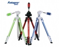

“新秀”脚架，快速展开，便携。四维云台，方便拍摄DV。S+分享理念，在“新秀”上表现了淋淋尽致。行业首创嵌入“二维码”让您的作品非常方便的分享。炫彩颜色，无限靓丽。
很高性价比，外形也很不错，最重要是轻便呀
轻便，易用，满足一般拍摄
稳定性还有待加强，但是这价格很值了
入门脚架里面外形功能兼备的一支
功能全面，中轴能反装，还有随脚架携带的六角匙，3d云台拍摄全景很实用，脚架很轻便，短途旅行神器
那个什么社交二维码没什么用，入门单反微单可以稳定，但是长焦镜头hold不住
呵呵，买了个骚蓝色，谁叫我是蓝蓝狗呢
做工很不错，拥有很多专业脚架才有的功能，设计很人性化，十分轻便
只能安装入门单反和微单，我的550d+18 105装上不是很稳，最好不要装长焦